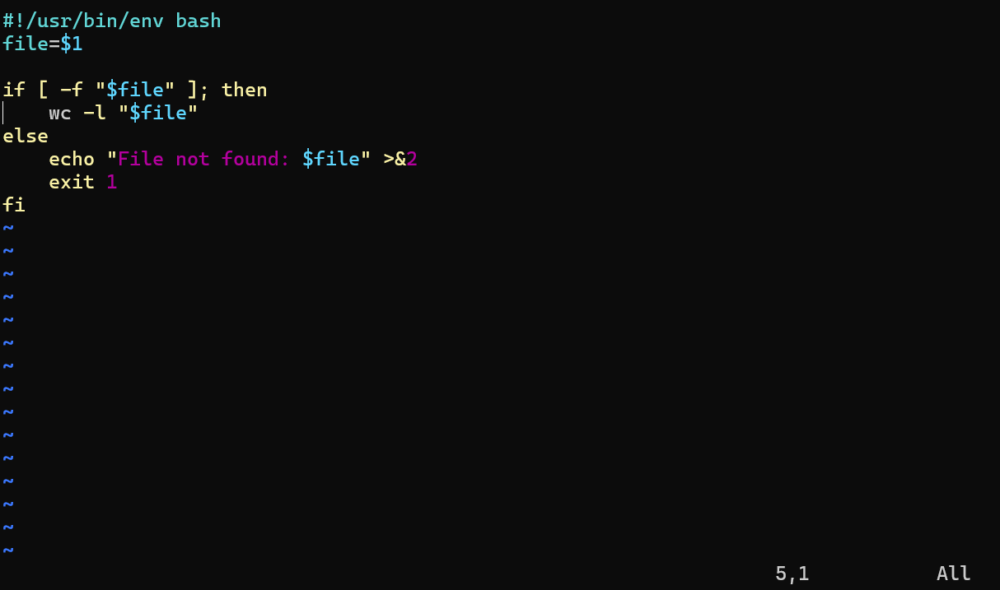

A practical way to think about Vim is that it starts in Normal mode, and you move into Insert mode only when you want to type text. To begin editing a file:
$ vim file.txtOnce Vim opens, it starts in Normal mode — keypresses are commands, not text.

| Key | Effect |
|---|---|
| i | Insert text before the cursor |
| a | Append text after the cursor |
| o | Open a new line below the current one and start typing |
| Esc | Leave Insert mode and return to Normal mode |
These commands begin with :, which enters Vim's command-line mode:
| Command | Effect |
|---|---|
| :w | Write (save) the file |
| :q | Quit (refuses if there are unsaved changes — save with :w, or discard with :q!) |
| :wq | Save and quit |
| :q! | Quit without saving changes |
In this unit the aim is not full Vim mastery. The aim is to become functional enough that if you open a file in a terminal or on a remote system, you can read it, move around, insert or append text, save the file, and exit without panic. Motions — how to move around efficiently and combine movement with editing — are covered next in 3.7.
If you want to go further than that, the best starting point is already installed alongside Vim: run vimtutor in your terminal. It opens a practice file and teaches you the basics by having you edit it, which works far better than reading a key list. It takes about half an hour. There are more options at the end of 3.7.
vim notes.txt. Press i, type a sentence, press Esc, then :wq to save and quit. Reopen the same file to confirm your sentence was saved.
FIT2109 · Week 3 · Monash University · by Dr. Zahra Mirzamomen